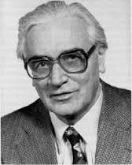
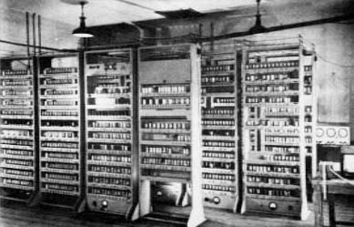
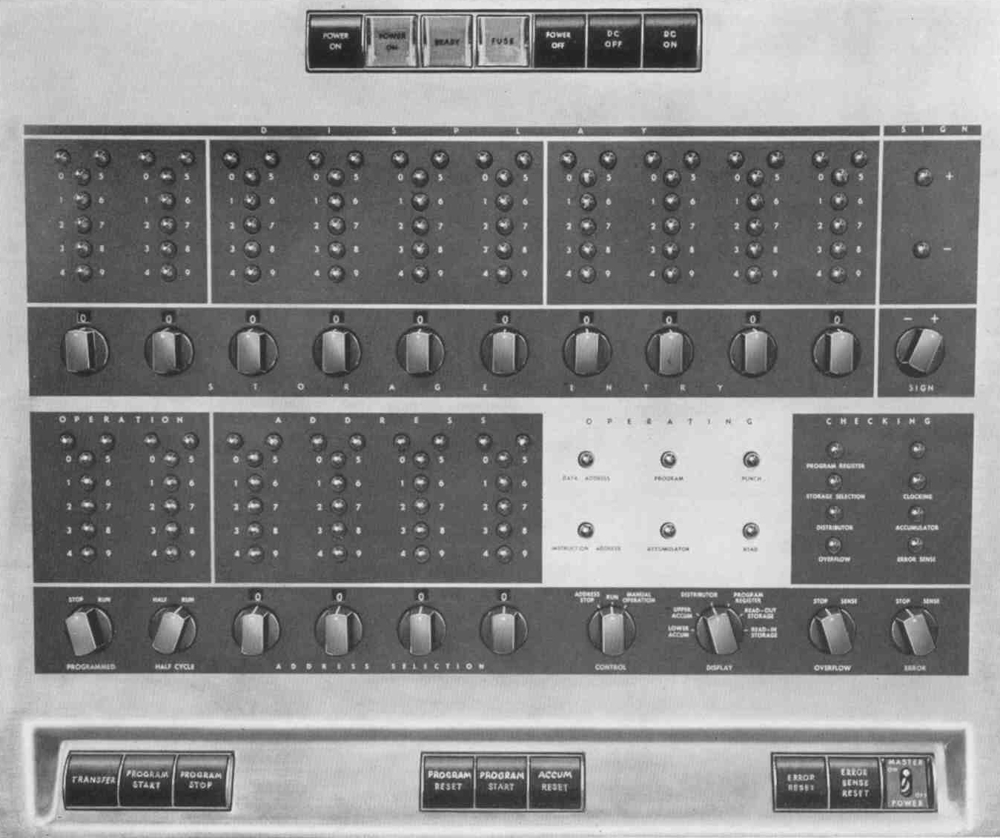
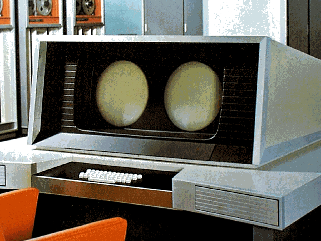

 The computer is a symbol of 20th century technology. Knowledge is vastly among us and is giving access to new opportunities to many. However, it did not appear out of thin air. There has been many breakthroughs in technical science that provided us the foundation to create what there is today. Many big names have worked over time, coming together to make big improvements to basic machines to create supermachines. One of the big names that got us to the point we are now in computing was a German technician with the name of Konrad Zuse. He was developing a series of automatic calculating machines during the 1930’s and 40’s before he created the first program-controlled computer, the Z1. Despite the problems it had, it contained all the basic ingredients in our modern machines today, including our important binary system. Then he created the Z2, but it still wasn’t functionally reliable. Then, another great discovery, the Z3, published in 1941. The Z3 is the world’s first fully functionable computer. Still not done creating history, in 1943, he describes “Plankalkul”, the world’s first high-level programming language, containing many of our basic language standards today. Then, in 1946 Zuse started the world’s first computer startup company, the “Zuse-Ingenieurbüro Hopferau.” Zuse was a major part in the history of computing, as he brought new technology and technology languages that are crucial today.
 In 1946, a new major computing creation was made. John Mauchly and John Presper Eckert developed the ENIAC, (Electrical Numerical Integrator And Calculator).It was taken over a year to build and over 500,000$ spent in tax dollars. The ENIAC was made to help the army in calculating complex wartime ballista tables, design the hydrogen bomb, weather prediction, cosmic ray studies, and more than helped greatly in that time. However, they developed a new machine that became a major improvement over the ENIAC, named the EDVAC (Electronic Discrete Variable Automatic Computer). They were working on the EDVAC two years before the ENIAC went into operation. Their idea for the EDVAC was to have the program for the computer stored inside the computer. It became one of the earliest mainframe computers to be built in the 1940’s. It could run over 20 hours and had a serial memory capacity of roughly 5.5 kB. It was developed more over the years and those machines are now called the grandparent machines of the ENIAC.
 Another piece of important computing technology was introduced in 1953, the IBM 650. The IBM 650 was designed by Frank Hamilton. It became the first successful commercial computer. It was not a binary computer, but a decima. The IBM used a fixed-magnetic drum that rotated at 12,500 RPM. It was a “true general-purpose computer”(Hamilton). It was first programmed in machine language, then in SOAP (Symbolic Optimal Assembly Program). It was a stored-program with a full set of decimal arithmetic including control instructions.The basic unit sold for around $169,600 (in 1956) and also could be rented from IBM. It used punched cards or typewriters for input and output and was between 2000 to 3000 pounds. The IBM could perform basic math in milliseconds. It became extremely successful, having almost 2000 models sold.
 Forwarding to the 60s, the first supercomputer was founded by Thomas Watson Jr. The supercomputer is named the CDC 6600. It was only around 6-10 million dollars, however. It had a dual video display console, plotter, printer, 2MB extended core storage, magnetic disk, magnetic drum, and not forgetting the keyboard. It was the fastest in the world until 1969 when a new version was introduced. It had a heat exchanger and a cooling system. It had an outstanding more than 100 mile wiring unit. It could do 3,000,000 instructions per second, exceeding anything before its time.
In conclusion, the machines we have all evolved from these, what would be minor today, major achievements. After the 60s, major developments from huge companies emerged. It sparked the age of technology, initiating giant productivity levels. The computing industry only began to grow off of these small products. Today we have machines that are more powerful in our pockets than the 3,000 pounds of technology they had.